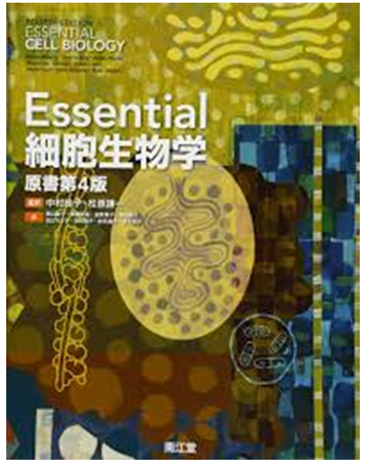
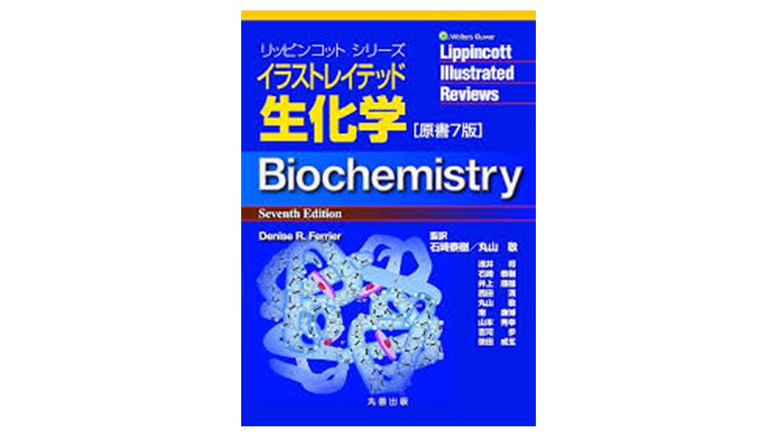
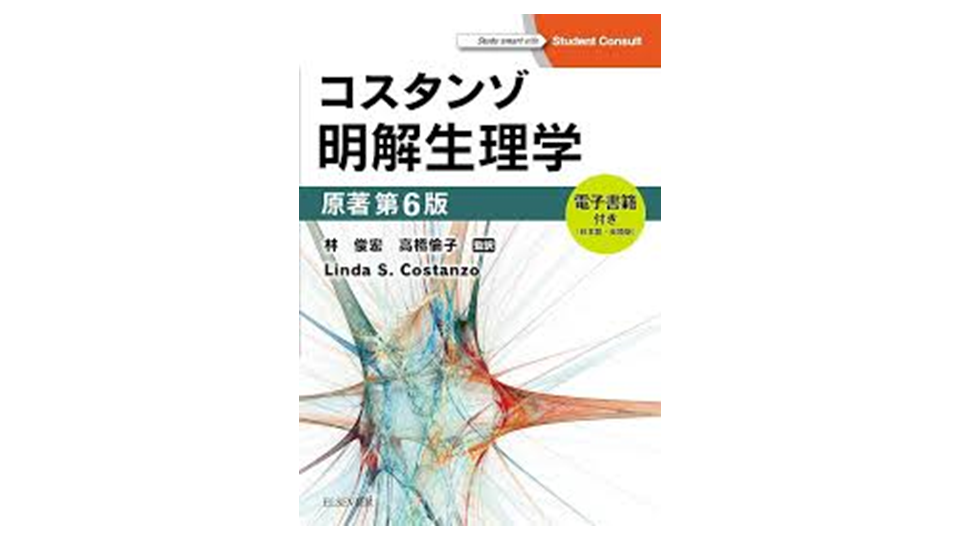
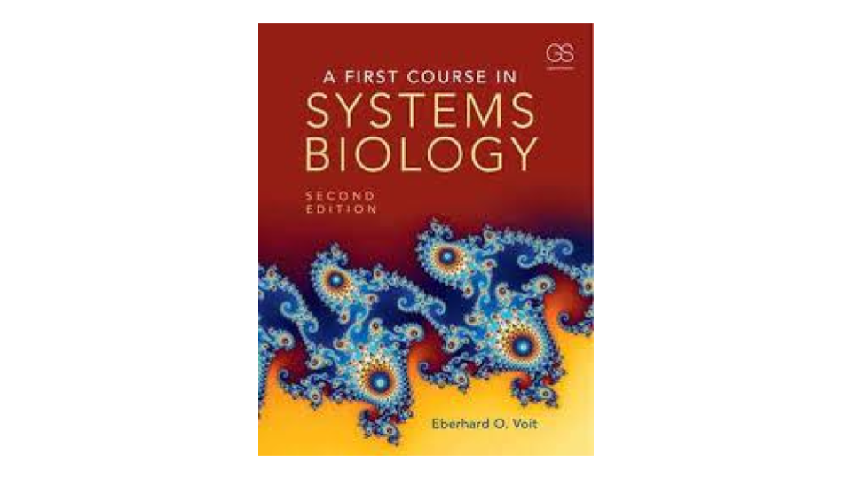
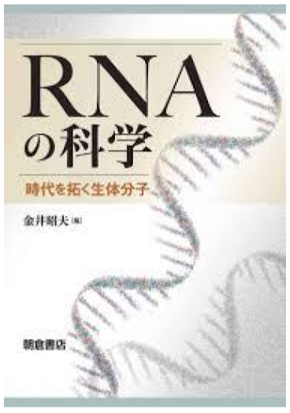

Essential 細胞生物学
B1の前期にゼミ・授業で読んだ本。大学受験で生物を使用していなかったので、これが初のBiologyの洗礼となった。
2021Biology
Loved Books

B1の前期にゼミ・授業で読んだ本。大学受験で生物を使用していなかったので、これが初のBiologyの洗礼となった。
2021
生化学の本はいろいろ見たが結局はこれに帰着した。
生物は基本的にすべてcase studyになってしまうが、生物の中でも解糖系・ペントースリン酸回路・脂肪分解などは共通しており、忘れるたびに参照している本。
2021~2022
「医学とは生理学である」と、偉い人が言ってたので、ゼミなどを活用しつつ読んだ本。呼吸・代謝代償性やアニオンギャップといった特有の概念を知れてよかった。
2021~2022
システム生物学のインターンの基礎知識を得るために読んだ本。遺伝子制御ネットワークのODEモデルを始めとする様々なモデリングがオムニバス形式で概説されている本。英語なことを除けば気軽に読める。近年、分野の本や生物物理の本が増えつつあり、当時よりも勉強しやすくなっているが、やはり成書は少ない。これ以降は論文を読みながらの勉強になる。
2023/06に読了
最近のRNAブームに乗る為に読んだ本。
RNAの基礎的なBiologyから、non coding RNAや、それらの応用までを一通り知れる絶好の本。
miRNAとかCas9最近よく聞くけど、どう働いているんだろう...?といった疑問をお持ちなら最適の本
2024/11あたりに読了